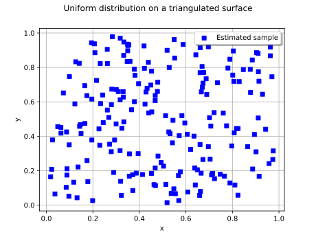

Note
Go to the end to download the full example code.
Uniform distribution on a triangular mesh¶
Abstract¶
In this example, we present the UniformOverMesh
distribution, which is the uniform distribution on a triangulated surface
embedded in an ambient space of dimension strictly larger than the intrinsic
dimension of the surface. We show how to build the distribution explicitly
from a mesh, and how to estimate the mesh from a sample with the
UniformOverMeshFactory class.
import openturns as ot
import openturns.experimental as otexp
import openturns.viewer as otv
Build the reference mesh¶
We consider a triangulation of the square ![[0,1]\times[0,1]]() embedded
in
embedded
in ![\Rset^3]() . The mesh contains two triangles per cell of a
. The mesh contains two triangles per cell of a
![16\times 16]() regular grid.
regular grid.
gridSize = 16
vertices = ot.Sample(0, 3)
simplices = []
for j in range(gridSize + 1):
for i in range(gridSize + 1):
x = i / gridSize
y = j / gridSize
vertices.add([x, y, 0.0])
for j in range(gridSize):
for i in range(gridSize):
index = j * (gridSize + 1) + i
simplices.append([index, index + 1, index + gridSize + 1])
simplices.append([index + 1, index + gridSize + 2, index + gridSize + 1])
mesh = ot.Mesh(vertices, ot.IndicesCollection(simplices), False)
distribution = ot.UniformOverMesh(mesh)
print("Volume of the mesh: ", distribution.getVolume())
Volume of the mesh: 1.0
Draw a sample and check the on-manifold test¶
The simplices of the mesh are selected with probabilities proportional to their volumes, and each realization is generated uniformly within the selected simplex.
ot.RandomGenerator.SetSeed(0)
sample = distribution.getSample(500)
print("The sample points belong to the mesh: ",
all(distribution.computePDF(point) > 0.0 for point in sample))
The sample points belong to the mesh: True
Estimate the mesh from the sample¶
The UniformOverMeshFactory class reconstructs a
surface from a sample: for each point, the local tangent plane is estimated
by a principal component analysis of the nearest neighbors, the neighbors
are Delaunay triangulated in the tangent plane, and the resulting triangles
are merged and pruned.
factory = otexp.UniformOverMeshFactory()
estimated = factory.buildAsUniformOverMesh(sample)
print("Number of estimated simplices: ",
estimated.getMesh().getSimplicesNumber())
print("Estimated volume: ", estimated.getVolume())
Number of estimated simplices: 2153
Estimated volume: 1.794488318552799
The estimated volume is of the same order of magnitude as the volume of the reference mesh, and the estimated distribution describes the sample: any point of the sample with a positive estimated PDF lies on the estimated manifold.
print("Reference volume: ", distribution.getVolume())
print("Covered sample points ratio: ",
sum(estimated.computePDF(point) > 0.0 for point in sample[:100]) / 100.0)
Reference volume: 1.0
Covered sample points ratio: 1.0
Draw a new sample from the estimated distribution and display it. The points of the original and the estimated sample are drawn on the surface.
ot.RandomGenerator.SetSeed(1)
estimatedSample = estimated.getSample(200)
cloud = ot.Cloud(estimatedSample.getMarginal([0, 1]), "blue", "fsquare",
"Estimated sample")
graph = ot.Graph("Uniform distribution on a triangulated surface",
"x", "y", True, "topright")
graph.add(cloud)
view = otv.View(graph)
otv.View.ShowAll()
